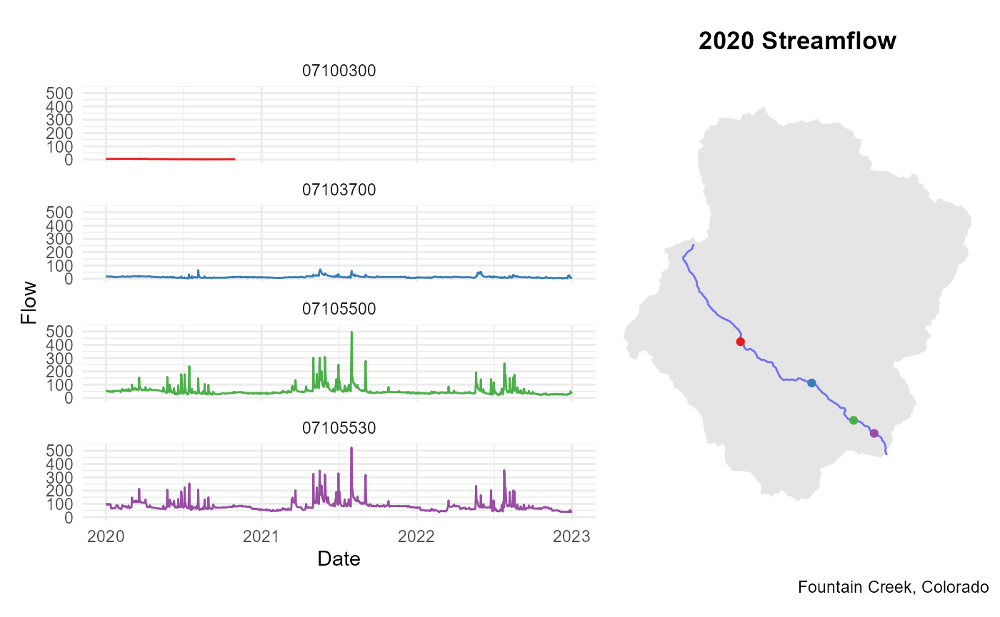

Network Linked Data Index: `dataRetrieval`
Mike Johnson
2023-01-03
Source:vignettes/nldi.Rmd
nldi.RmdThis post will demonstrate dataRetrieval functions to
query the Network
Linked Data Index (NLDI).
The NLDI provides a information backbone to navigate the NHDPlusV2 network and discover features indexed to the network. This process of feature discovery mirrors web-based navigation tools like Google Maps.
Navigation Analogy
Imagine you want to know about UCSB using Google Maps. In asking about the entity ‘UCSB’ we get information related to the feature (links, operating hours, photos) and things nearby.

UCSB via Google Maps
Imagine then that you want to travel from UCSB to UCLA and know you need gas along the way. In Google Maps you might use UCSB as your origin and ask for directions to UCLA that include gas stations along your route.

Gas stations between UCSB and UCLA
The NLDI works to provide the same functionality for the hydrologic
network allowing users to discover known features,
navigate from those along a route, and find other
features on that route. The primary difference being navigation occurs
over the hydrologic network rather then a transportation network. This
service is now available as part of the dataRetrieval
package through the findNLDI function.
Like any routing service, there are three types of information you
can provide findNLDI. These include:
- a feature to discover
- direction(s) to travel from that feature
- types of features to search for along the way
Each of these is discussed below using the following packages:
library(dplyr) # Data frame manipulation
library(ggplot2) # Plotting
library(patchwork) # Arranging plots
library(dataRetrieval) # The star of the show!What’s available?
First, we need to know what features are indexed in the NLDI. The
most current offerings can be found using get_nldi_sources,
and new features are regularly added. At the time of writing
(2023-01-03), 12 data sets have been indexed to the NHDPlus and
cataloged in the NLDI.
Feature/Origin discovery
Features can be requested in two primary ways: Using the the native
data set identifier, and using a location. The core feature set of the
NLDI include the NHD flowlines, USGS NWIS
locations, WQP locations, and HUC12 pour
points. Each of these are available as arguments in
findNLDI and can be used to request a feature object.
By Identifier
As an illustrative example, NHDPlus features can be requested by their COMID from the NHDPlusV2 data set.
findNLDI(comid = 101)#> $origin
#> Simple feature collection with 1 feature and 3 fields
#> Geometry type: LINESTRING
#> Dimension: XY
#> Bounding box: xmin: -94.64845 ymin: 31.0838 xmax: -94.62997 ymax: 31.09915
#> Geodetic CRS: WGS 84
#> # A tibble: 1 × 4
#> sourceName identifier comid geometry
#> <chr> <chr> <chr> <LINESTRING [°]>
#> 1 NHDPlus comid 101 101 (-94.64845 31.09915, -94.64803 31.09871, -94.6…The returned simple features object contains the native data set
identifier (“identifier”), sourceName of the native data set, and the
indexed NHD COMID (in this case a duplicate since an NHD feature was
requested). In the example above, we see the geometry column is of type
LINESTRING. To keep dataRetrieval lightweight,
the sf
package is not a dependency. Instead, if sf is not
installed - or no_sf = TRUE - only the sourceName,
comid, and identifier will be returned.
findNLDI(comid = 101, no_sf = TRUE)#> $origin
#> sourceName identifier comid
#> 1 NHDPlus comid 101 101To provide another example, we can request the NLDI representation of
USGS NWIS gauge 11120000
in both a sf and “non-sf” way. Features indexed to the
NHDPlus are returned as POINT objects. If sf
is enabled, the sourceName, identifier, X,
Y and geometry (sfc) are returned. If
sf is not available, the geometry is dropped but
the X and Y values are retained.
# local sf installation
findNLDI(nwis = "11120000")#> $origin
#> Simple feature collection with 1 feature and 8 fields
#> Geometry type: POINT
#> Dimension: XY
#> Bounding box: xmin: -119.8118 ymin: 34.42472 xmax: -119.8118 ymax: 34.42472
#> Geodetic CRS: WGS 84
#> # A tibble: 1 × 9
#> sourceName identifier comid measure reach…¹ name X Y
#> <chr> <chr> <chr> <dbl> <chr> <chr> <dbl> <dbl>
#> 1 NWIS Surface Water Sites USGS-11120000 1759… 92.5 180600… ATAS… -120. 34.4
#> # … with 1 more variable: geometry <POINT [°]>, and abbreviated variable name
#> # ¹reachcode
# No sf use/installation
findNLDI(nwis = "11120000", no_sf = TRUE)#> $origin
#> sourceName identifier comid measure reachcode
#> 1 NWIS Surface Water Sites USGS-11120000 17595429 92.50523 18060013000423
#> name X Y
#> 1 ATASCADERO C NR GOLETA CA -119.8118 34.42472Any NLDI feature found with get_nldi_source can be
requested by passing a type/ID pair as a list
to the origin argument. This will allow the networking
capabilities offered in dataRetrieval to grow naturally
with the NLDI itself. For example, we can use the origin argument to
request features that don’t offer a specific parameter.
#> named list()Location (longitude/latitude)
If you don’t know a feature ID, a
longitude/latitude (X,Y) pair or a sf/sfc
POINT object can be passed to the location argument. Doing
so will identify the NHDPlus catchment the location fall within and will
return the associated NHDPlusV2 flowline.
#> $origin
#> Simple feature collection with 1 feature and 3 fields
#> Geometry type: LINESTRING
#> Dimension: XY
#> Bounding box: xmin: -115.0326 ymin: 40.04013 xmax: -115.0182 ymax: 40.05183
#> Geodetic CRS: WGS 84
#> # A tibble: 1 × 4
#> sourceName identifier comid geometry
#> <chr> <chr> <chr> <LINESTRING [°]>
#> 1 NHDPlus comid 946060315 946060315 (-115.0182 40.05183, -115.0185 40.05176, -…
# Request by sf/sfc POINT object
ucsb <- sf::st_sfc(sf::st_point(c(-119.8458, Y = 34.4146)), crs = 4326)
findNLDI(location = ucsb)#> $origin
#> Simple feature collection with 1 feature and 3 fields
#> Geometry type: LINESTRING
#> Dimension: XY
#> Bounding box: xmin: -119.8823 ymin: 34.40438 xmax: -119.8256 ymax: 34.4179
#> Geodetic CRS: WGS 84
#> # A tibble: 1 × 4
#> sourceName identifier comid geometry
#> <chr> <chr> <chr> <LINESTRING [°]>
#> 1 NHDPlus comid 948060316 948060316 (-119.8823 34.41072, -119.8822 34.4106, -1…Navigation
From any feature (comid, huc12,
nwis, wqp, origin) or
location, four modes of navigation are available and
include:
- UT: Upper Tributary
- UM: Upper Mainstream
- DM: Downstream Tributary
- DD: Downstream Diversions
A example view of these navigation types can be seen below for NWIS site 11109000.
NLDI Navigation Options
One or more modes of navigation can be supplied to the
nav argument. For example we can ask to navigate along the
upper mainstem (UM) from COMID 101.
summarize.nldi <- function(input) {
data.frame(
name = names(input),
class = sapply(input, class)[1],
row.names = NULL
) %>%
mutate(feature_count = ifelse(class == "sf", sapply(input, nrow),
sapply(input, length)
))
}
findNLDI(comid = 101, nav = "UM") %>%
summarize.nldi()#> name class feature_count
#> 1 origin sf 1
#> 2 UM_flowlines sf 14Or along the upper mainstem (UM) and upper tributary (UT) of COMID 101.
#> name class feature_count
#> 1 origin sf 1
#> 2 UM_flowlines sf 14
#> 3 UT_flowlines sf 325In both cases the returned named list includes the origin and the
flowlines along the requested navigation. If sf is not
enabled, the returned object for a flowpath navigation is a vector of
COMIDs.
#> name class feature_count
#> 1 origin data.frame 3
#> 2 UM_flowlines data.frame 14
#> 3 DM_flowlines data.frame 43Searching along the Navigation
Like the gas station example, any of the features listed in
get_nldi_sources can be searched for along the network, for
example, we can find all NWIS gauges, on the upper tributary, of COMID
101.
#> name class feature_count
#> 1 origin sf 1
#> 2 UT_nwissite sf 2Of course, more than one resource can be requested, for example, lets replicate the previous search, this time adding Water Quality Points to the returned list:
#> name class feature_count
#> 1 origin sf 1
#> 2 UT_nwissite sf 2
#> 3 UT_WQP sf 29Note that flowlines are no longer the default return for navigation once a new feature is requested. To retain flowlines, the must be explicitly requested.
#> name class feature_count
#> 1 origin sf 1
#> 2 UT_nwissite sf 2
#> 3 UT_flowlines sf 325Upstream Basin Boundary
The Upstream Basin Boundary is a unique object that can be found for
any feature by adding “basin” to find. Basins are only
geometries with no specific attribute data. Therefore basins can only be
returned if sf is installed. Otherwise, the result will be
a 0 column data.frame
#> name class feature_count
#> 1 origin sf 1
#> 2 basin sf 1#> name class feature_count
#> 1 origin data.frame 3
#> 2 basin data.frame 0Distance Constraints
In some cases, particularly for DM and DD navigation, the network can
extend for hundreds of kilometers. You can limit (or extend) the
distance of your search using the distance_km argument. As
the name implies the value provided should be the maximum kilometers you
want to search for features. The default for distance_km is
100.
#> name class feature_count
#> 1 origin sf 1
#> 2 DM_nwissite sf 1
#> 3 DM_WQP sf 5
# Extended 200 km search
findNLDI(comid = 101, nav = "DM", find = c("nwis", "wqp"), distance_km = 200) %>%
summarize.nldi()#> name class feature_count
#> 1 origin sf 1
#> 2 DM_nwissite sf 8
#> 3 DM_WQP sf 17Basic dataRetrieval integration
Last, as this functionality is being added to the
dataRetrieval package, lets see a basic example of how the
NLDI tools provide a discovery mechanism for working with the
dataRetrieval tools. Here we will take a location that is
near Fountain
Creek in Colorado Springs, Colorado.
In this example we will use that location as the origin, navigate upstream along the mainstem, search for NWIS gauges, and use the identified siteIDs to query streamflow records from January 1st, 2020 to the current day.
# Upstream nwis, flowlines, and basin
fountainCreek <- findNLDI(
location = c(-104.780837, 38.786796),
nav = "UM",
find = c("nwis", "basin", "flowlines")
)
summarize.nldi(fountainCreek)#> name class feature_count
#> 1 origin sf 1
#> 2 basin sf 1
#> 3 UM_nwissite sf 57
#> 4 UM_flowlines sf 33
# Identify NLDI sites with daily values "dv"
# and record streamflow ("00060")
# and recorded flows in 2020
find <- whatNWISdata(sites = gsub(
"USGS-", "",
fountainCreek$UM_nwissite$identifier
)) %>%
filter(
data_type_cd == "dv",
parm_cd == "00060",
end_date > as.Date("2020-01-01")
) %>%
mutate(identifier = paste0("USGS-", site_no)) %>%
inner_join(fountainCreek$UM_nwissite, by = "identifier") %>%
sf::st_as_sf()
# Extract Streamflow for identified sites
Q <- readNWISdv(find$site_no,
parameterCd = "00060",
startDate = "2020-01-01"
) %>%
renameNWISColumns()
# Plot!
ggplot() +
geom_line(
data = Q,
aes(x = Date, y = Flow, col = site_no),
size = .5
) +
facet_wrap(~site_no, nrow = 4) +
theme_minimal() +
scale_color_brewer(palette = "Set1") +
theme(legend.position = "none") +
ggplot() +
geom_sf(data = fountainCreek$basin, col = NA) +
geom_sf(data = fountainCreek$UM_flowlines, col = "blue", alpha = .5) +
geom_sf(data = find, aes(col = site_no)) +
scale_color_brewer(palette = "Set1") +
theme_void() +
labs(
title = "2020 Streamflow",
caption = "Fountain Creek, Colorado"
) +
theme(
legend.position = "none",
plot.title = element_text(face = "bold", hjust = .5)
)